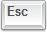
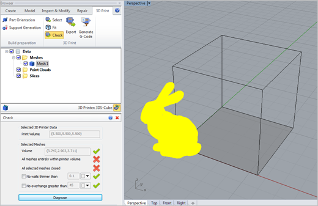
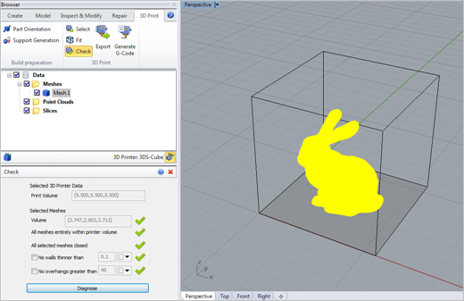

Use this command to check a selected mesh to make sure it meets the specifications of the 3D printer you have selected using the Select command. The command dialog also perform additional checks on your mesh (see below). Pass/Fail indicator icons are displayed. You can adjust the parameters re-check your results.
 This command may change the shape of your mesh model!: Experimentation with the methods and options listed below is advised until you understand and are satisfied with your results. This command may change the shape of your mesh model!: Experimentation with the methods and options listed below is advised until you understand and are satisfied with your results.
Diagnosing Problems: Be sure to select the Diagnose button to re-check your mesh after making ANY adjustments to the parameters.
Toggle Printer Volume Visibility: Select this icon to display the Volume of your selected 3D Printer in the graphics window, then use the Fit command to reposition your mesh within this volume if needed.
|
|
1.Select mesh(es) to check.. Press Enter when done: 2.Select mesh(es) and click "Diagnose". Hit Right Mouse Button/Cancel to exit. |
|
Screen Pick
|
Optional Information
|
Step 1
|
Pick the Check icon from the 3D Print Tab.
|
Steps 1 & 2 can be performed in reverse order. You can select a mesh first and then select the command icon.
|
Step 2
|
Select the mesh you want to check.
|
Step 3
|
From the command dialog, select the Checks to run and then pick the Diagnose button to display the results.
|
The graphics window will display the color-coded results of the check according to the 3D Printer you have selected. See Select and 3D Printer Specifications for more information.
|
|
Before mesh(es) are selected:  or
After mesh(es) are selected: or
|
Proper Mesh Positioning: If your mesh model is positioned outside the volume specifications of the 3D printer you have selected using the Select command, use the Fit command to position it correctly. Then use the Check command to verify that the mesh not only fits within the printer's volume but that it is also positioned correctly within that volume.
|
Abrupt changes in Curvature: Use Curvature and Reflection Lines to show abrupt changes in facet curvature tangents on your mesh model. If unwanted curvatures or protrusions are found, try using the Smooth and Re Mesh commands and then analyze your mesh again to see the difference in curvature results.
Imported Point Cloud Data: The Curvature method is useful for analyzing mesh models created from imported point cloud data! Refer to the Create Mesh from Point Cloud command for more information.
Analyze before Printing: It is ALWAYS a good idea to use these Analysis techniques before sending your mesh model to the 3D printer. They can reveal areas of concern that can be fixed, saving you valuable time and money!
|
|
The following options and reference information is available from the Browser:
Print Volume
These values are determined by the 3D printer you select using the Select command. They are displayed for reference only.
|
Volume
This value displays the total volume of your selected mesh. If it exceeds the Max Print Volume for the selected 3D printer, this check will fail.
All meshes entirely within printer volume
If ANY facet in the selected mesh is located outside of the Print Volume, this check will fail.
All selected meshes closed
If your mesh model is not closed, this check will fail. You can use Stitch & Close, Auto Fix or Diagnose to fix this problem automatically.
No walls thinner than
If the width of any walls in the selected mesh fall below this parameter, this check will fail. Thin walls are displayed in the color selected.
No overhangs greater than and higher than
If the overhang of facets in the selected mesh are greater than this Angle or Height parameter, this check will fail. Overhang areas are displayed in the color selected.
|
Diagnose
Select this button to "re-check" the selected mesh and display new results in the dialog and graphically on the screen.
|
After selecting Cube Pro 2 as the 3D printer (see Select), the following mesh model was checked and the results displayed.
indicates the mesh model failed a parameter check.
indicates the mesh model passed a parameter check.
 Check Mesh Results (Before)
After using the Fit, Stitch & Close commands and then making some parameter adjustments, selecting the Diagnose button finds that the mesh now passes all checks and is ready to 3D print.
indicates the mesh model passed a parameter check.
 Check Mesh Results (After)
|